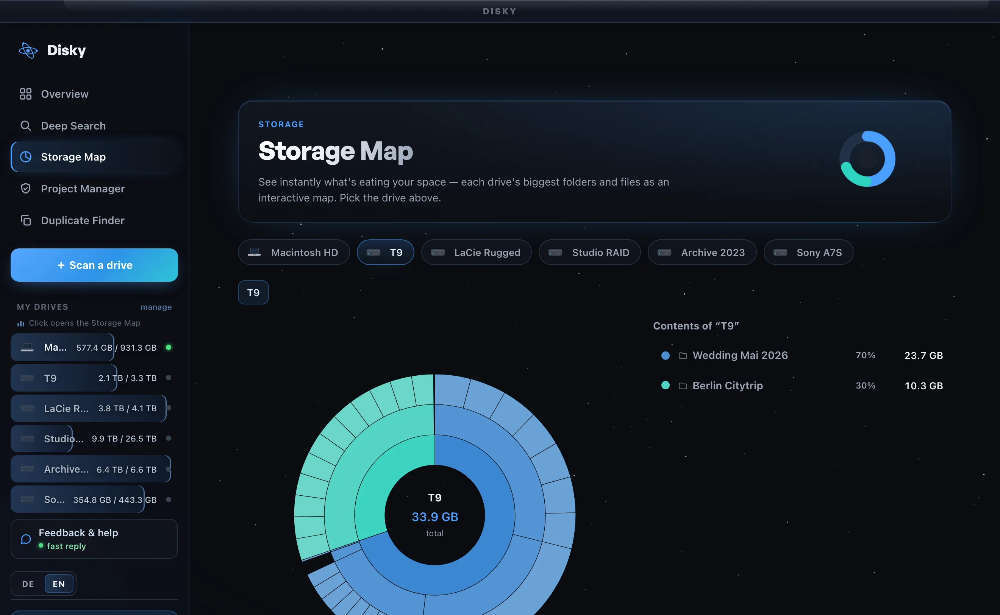
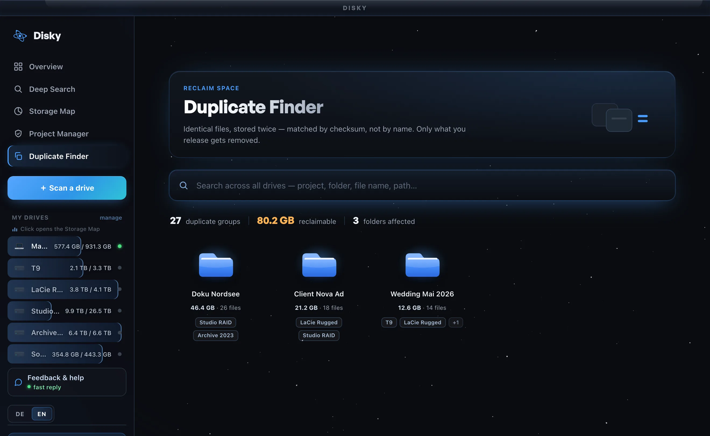
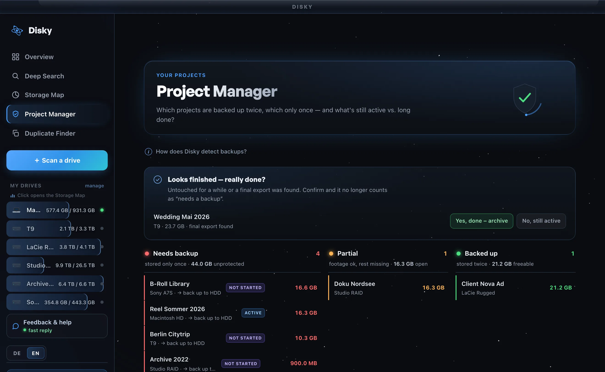

Plug a drive in — once.
Connect an external drive a single time. Disky opens it strictly read-only: it looks, it never touches. Nothing is moved, renamed, copied off, or deleted.
Read-only · your files are never altered
Disky remembers every drive you own — search by name or what's inside, reclaim space, catch duplicates, see everywhere you've shot. All on your Mac, nothing plugged in.
Free to start · macOS, Apple Silicon · 100% local · Read-only


Three steps, then you never plug a drive in to search again.
Connect an external drive a single time. Disky opens it strictly read-only: it looks, it never touches. Nothing is moved, renamed, copied off, or deleted.
It records every file: names, folders, projects — and reads what's inside your footage and photos, so you can find a shot by what it shows. All of it stays on your Mac.
Put the drive back in the drawer. The catalog lives in Disky, so every search after that finds the exact drive and path with nothing connected — across all of them at once.
You own ten, twenty, more — black bricks with no labels, and the shot lives on exactly one of them. Right now the only way to find it is to plug them in, one cable at a time, until you get lucky.
Drive 1 of 18 · still searching…
The offline catalog is just the start. Real features — shipping in the app, shown straight from it.

Every drive's biggest folders and files as one interactive map. Spot the space hogs in seconds — even with the drive unplugged in the drawer.

Finds identical files by checksum — not by name — across all your drives. See exactly what's safe to remove, and how much you'd get back.

Every project scored — backed up twice, only once, or still at risk — with a “really done?” check before you archive a finished job.
… and more to come.
Disky catalogs your drives entirely on your Mac. The content-search AI is the only piece that touches the internet, and only once: it downloads the model on first use, then runs fully on-device — after that, zero bytes of your footage ever leave the machine. Your account only carries your license, never your files.
Native Apple Silicon · Notarized & signed by Apple · Read-only by design
That's the goal — and it's just getting started. Any feature you wish existed? Hit us up, and we'll make it happen.
Suggest a feature →Real people read every message — the best ideas ship.
One catalog of every drive you own — searchable in seconds, on your Mac, while the drawer stays shut. Catalog once. Never dig again.
One email the day Disky ships. No spam, unsubscribe anytime.
Free to start · macOS, Apple Silicon · Read-only · 100% local
 ?
?